TextToVoicevox 説明書
PDF・画像・画面の文字を取り出して、ずんだもんなど VOICEVOX の声で読み上げ、音声ファイルにする無料アプリです。
まず3分で使い始める
くわしい説明は後ろの章にあります。まずはこの3つだけで動きます。
- VOICEVOX を入れる … VOICEVOX 公式サイトから落として入れます（声を作る本体です。くわしくはこちら）。
- アプリを入れる … 自分のパソコンの方の1行をコピーして、貼り付けて実行します。
Windows
スタートボタンを右クリック →「ターミナル」に貼って Enter
irm https://raw.githubusercontent.com/rakuyou211-blip/TextToVoicevox/main/install.ps1 | iex
Mac
Launchpad →「ターミナル」に貼って return
curl -fsSL https://raw.githubusercontent.com/rakuyou211-blip/TextToVoicevox/main/install.sh | bash
終わるとアプリが開きます。次からは、デスクトップ（Mac は Launchpad）の「TextToVoicevox」から開きます。コマンドを使いたくないときは zip から入れる方法もあります。
- 読ませる … PDF や画像をアプリにドラッグ＆ドロップすると、文字が右に出ます。聞きたい行をクリックして ▶ 再生。
1. このアプリでできること
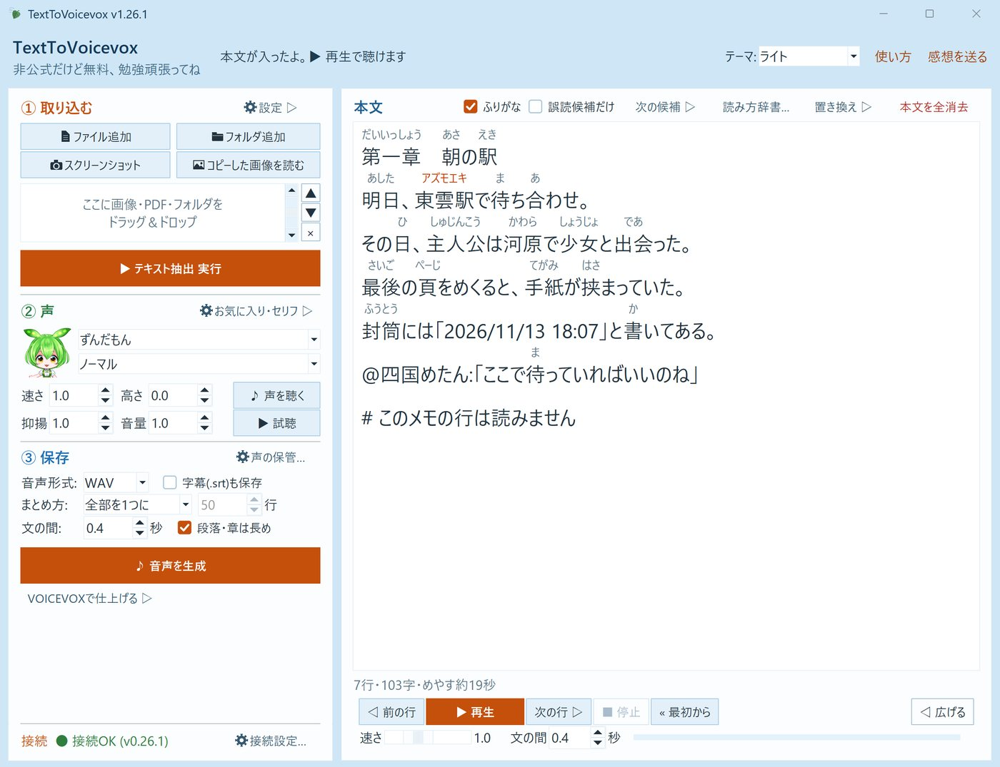
- 文字を取り出す … PDF・画像（PNG/JPG など）・テキスト・Word（.docx）・電子書籍（.epub）から。スキャンした本や写真の文字も、パソコンの中だけで読み取ります（縦書きも読めます）。
- 画面の文字を読む … 電子書籍やブラウザなど、画面に出ている文字を囲むだけで読み上げます。
- 読み上げる … VOICEVOX の声（ずんだもん、四国めたん など）で、選んだ行から最後まで続けて読みます。しおり付きで、止めた所から続きを聴けます。
- 読み間違いを先に見つける … 漢字の上に、VOICEVOX が実際に読む読み（ふりがな）が出ます。辞書と違う読みには色が付くので、聴く前に直せます。
- 音声ファイルにする … WAV・M4A・MP3・章付きオーディオブック（M4B）と、字幕（.srt）を作れます。
2. 用意するもの
| もの | なぜ要るか | どこで手に入るか |
|---|---|---|
| VOICEVOX（無料） | 声を作っている本体です。これが無いと声は出ません（文字を取り出すだけなら無くても使えます）。 | voicevox.hiroshiba.jp |
| Python 3.9 以降（無料） | このアプリは Python で動いています。おすすめの「1行で入れる」方法なら、自分で入れる必要はありません（Windows は Python 入りの版が入り、Mac は無ければ自動で入れます）。 | python.org（zip から使うときだけ） |
インターネット接続は、最初のインストールのときだけ要ります。
3. インストール
アプリの入れ方は2通りあります。おすすめは「1行で入れる」方法です。ブラウザで落とした zip とちがって、Windows や Mac の「このファイルは危ないかも」という警告が出ず、更新も同じ1行でできます。
VOICEVOX を入れる（Windows・Mac 共通）
- VOICEVOX 公式サイトを開き、自分のパソコン（Windows / Mac）用をダウンロードします。GPU のあるパソコンなら GPU 版がおすすめです（声を作るのが速くなります）。
- 落としたインストーラを開いて、画面の案内どおりに入れます。
- 一度 VOICEVOX を起動して、利用規約に同意しておきます。あとは閉じてかまいません。
Windows：1行で入れる（おすすめ）
- スタートボタンを右クリックして「ターミナル」（または「Windows PowerShell」）を開きます。管理者として開く必要はありません。
- 次の1行をコピーして、ターミナルに貼り付け（右クリック または Ctrl+V）、Enter を押します。
irm https://raw.githubusercontent.com/rakuyou211-blip/TextToVoicevox/main/install.ps1 | iex
- Python 入りの版（約 200MB）を落として、
%LOCALAPPDATA%\TextToVoicevoxに置きます。数分かかることがあります。終わるとアプリが開き、デスクトップとスタートメニューに「TextToVoicevox」ができます。 - 次からは、デスクトップの「TextToVoicevox」をダブルクリックするだけです。
この1行は何をしているの？（貼る前に知りたい人へ）
irm がこのアプリの GitHub から導入用の台本（install.ps1）を取ってきて、iex がそれを実行します。台本がすることは次の3つだけです。中身はリンク先でいつでも読めます。
- 配布ページから、最新版の「Python 入りの版」を落とす
- 自分のユーザーのフォルダ（
%LOCALAPPDATA%\TextToVoicevox）に置く（管理者の権限は使いません） - デスクトップとスタートメニューにアイコンを作り、Windows の「設定 → アプリ」に載せて（そこから消せるように）、起動する
ブラウザで落とした zip にはインターネットから来た印が付き、Windows が警告で止めます。この方法は PowerShell 自身がファイルを取ってくるので印が付かず、警告が出ません。ネットからのコマンドを貼るのが不安なときは、zip から入れる方法を使ってください。
Windows：zip から入れる
- python.org から Python（3.9 以降）を入れます。インストーラの最初の画面で「Add python.exe to PATH」に必ずチェックを入れてから進めてください（ここが一番のつまずきどころです）。
Python のインストーラの最初の画面（下のほう）☑ Add python.exe to PATH ← ここにチェックしてから
Install Now を押す - 配布ページから
TextToVoicevox_Windows.zipを落とします。 - zip を右クリック →「すべて展開」します。zip を開いた中身のまま起動すると失敗します（Windows がファイルを1つだけ一時フォルダに取り出してしまうためです）。
- 展開してできたフォルダの 起動.pyw をダブルクリックします。初回だけ黒い窓でセットアップが進みます（ネット接続が必要・数分）。終わるとそのままアプリが開きます。
- 1回開くと、フォルダに「TextToVoicevox」（アプリの絵のアイコン）ができ、起動.pyw は app フォルダの中にしまわれます。次からは「TextToVoicevox」を開きます。
詳細情報 ← ここを押すと 実行 が出ます
Mac：1行で入れる（おすすめ）
- Launchpad で「ターミナル」を探して開きます（Spotlight で ⌘+スペース →「ターミナル」でも開けます）。
- 次の1行をコピーして貼り付け（⌘+V）、return を押します。
curl -fsSL https://raw.githubusercontent.com/rakuyou211-blip/TextToVoicevox/main/install.sh | bash
- Python が見つからないときは「このアプリ専用の Python 3.12 を入れますか？」と聞かれるので、return（はい）で答えます。約20MB で、自分のユーザーの中だけに入れるので、パスワードは要りません。
- 終わるとアプリが開き、Launchpad と Spotlight に「TextToVoicevox」ができます。次からはそこから開きます。
この1行は何をしているの？（貼る前に知りたい人へ）
curl がこのアプリの GitHub から導入用の台本（install.sh）を取ってきて、bash がそれを実行します。台本がすることは次のとおりで、中身はリンク先でいつでも読めます。
- Python を探す（無ければ、聞いてから自分用の Python を入れる）
- 最新版を
~/Library/Application Support/TextToVoicevoxに置き、必要な部品を入れる ~/Applicationsに「TextToVoicevox」を作って、起動する
すべて自分のユーザーの中だけで行い、管理者のパスワードは使いません。ダウンロードが途中で切れても、書きかけの台本が動かないように作ってあります。
Mac：zip から入れる
- 配布ページから
TextToVoicevox_Mac.zipを落とし、ダブルクリックで展開します（Mac に最初から入っている展開がおすすめです。ほかのツールは日本語のファイル名や実行の許可を壊すことがあります）。 - 起動.command はまだダブルクリックしません。ブラウザで落としたファイルは、Mac が「開けません」で止めるためです。代わりに、ターミナルを開いて
bashと打ち、半角スペースを1つ入れてから、フォルダの中の setup_mac.sh をターミナルの画面へドラッグして return を押します。 - セットアップが進み、そのままアプリが開きます。2回目からは「起動.command」のダブルクリックで開けます。
マウスだけで通したいとき（macOS 15 Sequoia 以降）
「"起動.command"は開いていません」が出たら、「ゴミ箱に入れる」は押さずに「完了」で閉じます。次に システム設定 → プライバシーとセキュリティ を下へスクロールし、「"起動.command"はブロックされました」の隣の「このまま開く」→「開く」を押します。macOS 14 以前は、右クリック →「開く」→「開く」でも通せます。最初の1回が通れば、残りのファイルの印は自動で外れます。
動いたか確かめる
アプリが開いたら、次の3つを確かめます。
- 左の列のいちばん下に ● 接続OK と出ている（VOICEVOX とつながっています）
- 右の本文に何か文を打って、② の ▶ 試聴 を押すと声が鳴る
- 本文の漢字の上に、小さな読み（ふりがな）が出ている
どれかがうまくいかないときは、14. 困ったときを見てください。いちばん多いのは、VOICEVOX をまだ入れていない・一度も起動していない、です。
更新とアンインストール
新しい版に更新する
新しい版が出ると、アプリの上の帯に「新しい版があります」と出ます。押すと入れ替え方が出ます。
- 1行で入れた人 … 同じ1行をもう一度貼るだけです。設定・辞書・本文の自動保存はそのまま残ります。
- zip で入れた人 … 新しい zip を、今のフォルダの上に上書きで展開します。
アンインストール（消す）
Windows で1行で入れた人は、次のどちらかで消せます（どちらも同じことをします）。
- 設定から … スタートボタン →「設定」→「アプリ」→「インストールされているアプリ」で、TextToVoicevox の … →「アンインストール」。黒い窓が開き、消す物を見せてから消します。
- 1行で … ターミナルに次の1行を貼って Enter。
irm https://raw.githubusercontent.com/rakuyou211-blip/TextToVoicevox/main/uninstall.ps1 | iex
消すのは、%LOCALAPPDATA%\TextToVoicevox フォルダ（設定と本文の自動保存もこの中）、デスクトップとスタートメニューのアイコン、「設定 → アプリ」の登録だけです。VOICEVOX（読み方辞書も VOICEVOX の側にあります）と、作った音声ファイルは残ります。v1.26.2 までに入れた人は、同じ1行で一度更新すると「設定 → アプリ」に出てきます（消す1行は、更新しなくても使えます）。
| 入れ方 | 消し方 |
|---|---|
| Windows・1行 | 上のとおり（「設定 → アプリ」か、消す1行） |
| Mac・1行 | ~/Library/Application Support/TextToVoicevox フォルダと ~/Applications/TextToVoicevox.app をゴミ箱へ（Python も入れてもらった場合は ~/.local/python3.12 も消してかまいません） |
| zip | 展開したフォルダごと消すだけです |
エクスプローラーのアドレス欄に %LOCALAPPDATA% と打つと、Windows のそのフォルダが開きます。Mac の Finder では ⌘+Shift+G で場所を打てます。
4. 画面の見かた
画面は2列です。左の列に手順（① → ② → ③）が上から並び、右に本文と再生バーがあります。
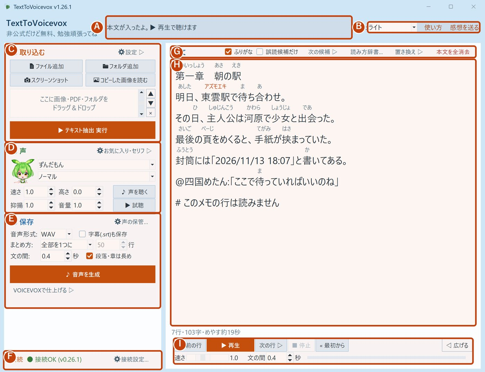
- Aお知らせ … いま何をしているか、次に何をすればいいかが出ます
- Bテーマ・使い方・感想を送る … 色を変える／この説明書を開く／作者に感想を送る（12章）
- C① 取り込む … 読ませたいファイルや画面を入れて、文字を取り出す（6章）
- D② 声 … キャラと声の種類、速さなどを選んで試聴する（7章）
- E③ 保存 … 音声ファイルや字幕を作る（10章）
- F接続 … VOICEVOX とつながっているか（11章）
- G本文の道具 … ふりがな・誤読候補・次の候補・読み方辞書・置き換え・全消去（8章）
- H本文 … 取り出した文字。手で書き直せて、60秒ごとに自動で保存。漢字の上にふりがな（8章）
- I再生バー … 再生・一時停止・前の行／次の行・速さ・あと何分（9章）
ボタンの色の意味
塗ったボタン は大事な操作（テキスト抽出 実行・音声を生成・再生）、面のあるボタン はよく使う操作、枠だけのボタンはときどき使う操作です。歯車の付いた文字（⚙ 設定 ▷ など）は、設定を開きます。赤い文字の「本文を全消去」は本文を消すボタンです（消しても「復元」で戻せます）。
5. 基本の使い方
基本は、入れる → 取り出す → 声を選ぶ → 聞く／保存する の4つです。
- 入れる … 読ませたい PDF や画像を、左の列の「ここに画像・PDF・フォルダをドラッグ＆ドロップ」へドラッグします（ファイル追加 でも選べます）。空の本文に出る ファイルを選ぶ… からでも入れられます。
- 取り出す … ファイルを入れると、自動で文字を取り出して右の本文に出します。取り出し直すときは ▶ テキスト抽出 実行（Ctrl+Enter）。
- 声を選ぶ … ② でキャラ（ずんだもん など）と声の種類（ノーマル など）を選び、▶ 試聴 で聞いて確かめます。
- 聞く／保存する … 本文の聞きたい行をクリックして、再生バーの ▶ 再生。ファイルにしたいときは ③ の ♪ 音声を生成。
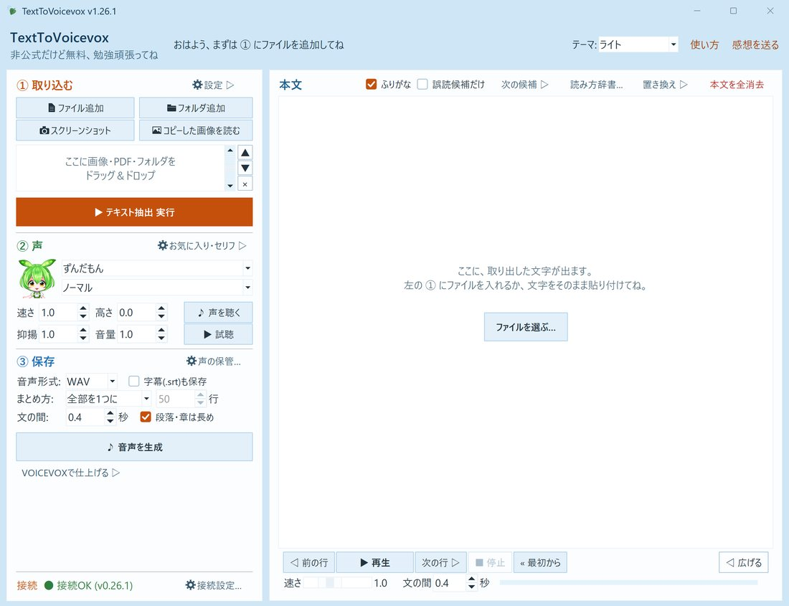
6. ① 取り込む

- ファイル追加（Ctrl+O）… ファイルを選んで入れます。PDF・PNG/JPG/BMP/TIFF/WEBP/GIF・txt・docx・epub に対応。
- フォルダ追加 … フォルダの中のファイルをまとめて入れます。
- スクリーンショット（Ctrl+R）… 画面の読みたい所をドラッグで囲むと、その文字を読み上げます。
- コピーした画像を読む … クリップボードの画像（画面のコピーなど）の文字を読みます。
- ファイルの一覧の右の ▲▼ で順番を変え、× で外します。
- ▶ テキスト抽出 実行（Ctrl+Enter）… 文字を取り出し直します。
画面の文字を読む（スクリーンショット）
電子書籍・PDF ビューア・Web ページなど、画面に出ている文字をそのまま読ませられます。
- スクリーンショット を押すと、アプリが一度隠れて、画面を撮ります（自分の窓が写り込まないように）。
- 読みたい所をドラッグで囲みます。囲み終わるとすぐ文字を読み取って、読み上げます。
- ページをめくったら、同じ範囲を読む（Ctrl+Shift+R）で、囲み直さずに同じ所を読めます。「めくったら自動で読む」にチェックすると、ページが変わるたびに自動で読みます。
取り出し方の設定（設定 ▷）

- 改行の扱い … 「文ごとに改行（VOICEVOX推奨）」か「元の改行を保持」。
- PDF … 「自動（文字の無いページは画像から読む）」か「いつも画像から読む（スキャン・文字化け）」。ページ範囲（例:
5-320）で表紙や目次を飛ばせます。 - 文の整え方（チェックで切り替え）
- 画像を見やすくしてから読む
- 空行を削除
- PDF のページの見出しと番号を読まない（本の名前やページ番号が毎ページ読まれないように）
- 英数字間の空白を保持
- 折り返し連結（1段組みの本文向け）
- 画面キャプチャのノイズを除去（ニュース画面の時計やロゴなど）
- 読み取りの間違いを直す（カ⇔力、ー⇔一 などの見まちがい）
取り除いた行（ページ番号など）は、本文の上の「直した所」で確かめられます。
7. ② 声

- キャラとスタイル（ノーマル・あまあま など）を選びます。左のキャラの顔を押すと、その声のサンプルが鳴ります。
- 速さ・高さ・抑揚・音量 … 1.0 が標準です。
- ♪ 声を聴く … 選んだ声の公式サンプルを聞きます。
- ▶ 試聴（Ctrl+P）… カーソルのある行を、今の設定で読ませます。読みのカナも出るので、読み間違いに気づけます。
お気に入り・セリフ ▷
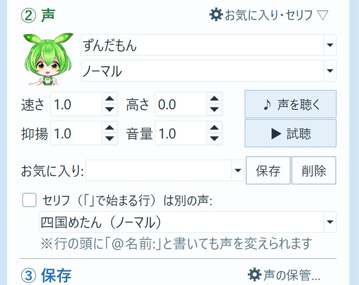
- お気に入り … 今の声と速さなどに名前を付けて 保存。次から選ぶだけで戻せます。
- セリフ（「」で始まる行）は別の声 … チェックすると、会話の行だけ別の声で読みます。小説の地の文とセリフを分けたいときに。
行ごとに声を変える・読まない行を作る
| 本文での書き方 | はたらき |
|---|---|
@ずんだもん:こんにちは | 行の頭に @キャラ名: と書くと、その行だけその声で読みます（掛け合いに）。@四国めたん（あまあま）: のようにスタイルも指定できます（スタイルを省くと、そのキャラの最初のスタイル）。名前が見つからない行があると、音声を作る前に知らせます。 |
# メモ | 行の頭に # を付けた行は読みません（台本のメモ用）。保存する音声にも入りません。 |
本文を右クリックすると、「この行を試聴」「選択語を辞書登録」、その行に @名前: を付ける、# でメモにする、などの近道が出ます。
8. 本文とふりがな

ふりがな（読みの確認）
- 漢字の上に、VOICEVOX が実際に読む読みが出ます。辞書どおりの読みはひらがな、辞書と違う読みは色付きのカタカナ（読み間違いかもしれない所）です。
- 色付きのふりがなを押すと、その言葉が入った状態で「読み方辞書」が開きます。正しい読みを入れて登録すれば直ります。
- 誤読候補だけ にチェックすると、色付きの所だけを出します。
- 次の候補 ▷（F8。前へは Shift+F8）… 次の「読み間違いかも」の所へ移ります。長い本でも候補だけを順に見られます。
- ふりがなは VOICEVOX につながっているときだけ出ます。つながっていないときは本文のすぐ上にそう出るので、となりの 画面なしで起動 を押します。
読み方辞書
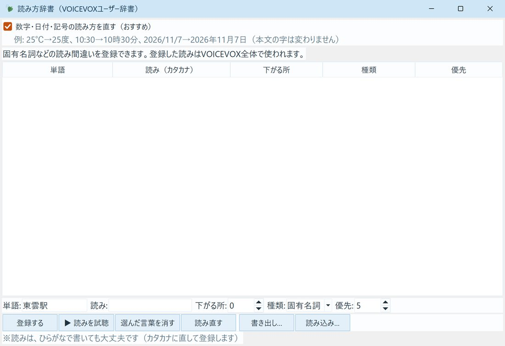
- 単語と読み（ひらがなでも OK）を入れて 登録する。▶ 読みを試聴 で確かめられます。
- 登録した読みは VOICEVOX 全体で使われます（VOICEVOX のエディタでも同じ辞書が効きます）。
- 数字・日付・記号の読み方を直す（おすすめ・最初からオン）…
25℃→ 25度、10:30→ 10時30分、2026/11/13 18:07→ 2026年11月13日 18時7分、1,234 KB→ キロバイト のように、VOICEVOX が読み間違えやすい形を、読む前に直します（本文の字は変わりません）。 - 本文の言葉を選んで右クリック →「選択語を辞書登録」でも登録できます。
置き換え ▷・検索
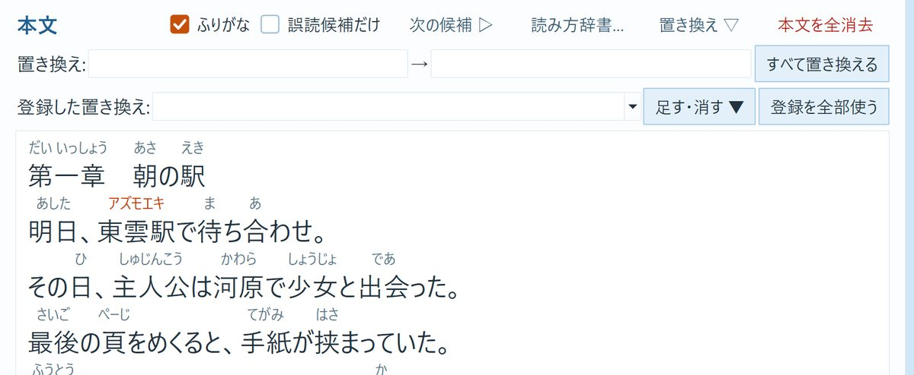
- 置き換え … 本文の言葉をまとめて置き換えます。よく使う置き換えは「登録した置き換え」に入れておけます（読み取りの決まった間違いを直すのに便利）。
- 検索（Ctrl+F）… 本文の中の言葉を探します。
- 本文を全消去 … 本文を消します。消したあとは同じ所が「復元」になり、押すと戻せます（Ctrl+Z でも戻せます）。
9. 再生バー
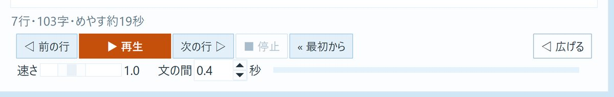
| ボタン | はたらき |
|---|---|
| ▶ 再生 | カーソルのある行から最後まで続けて読みます。読んでいる行は色が付き、本文の上から3分の1あたりに保たれます。 |
| ‖ 一時停止（Space） | 止めて、もう一度押すと続きから読みます（Windows は止めた所から、Mac は同じ行の頭から）。 |
| ◁ 前の行・次の行 ▷ | 1行ずつ戻る・進む。再生中なら、そこから読み直します。 |
| ■ 停止（Esc） | 止めます。次に ▶ 再生 を押すと、止めた行から続けられます（しおり）。 |
| « 最初から | 本文の最初から読みます。 |
| 速さ・文の間 | その場で変えられます（② の速さ、③ の文の間と同じ値です）。 |
| 何行目・あと約◯分 | 右端に、いま何行目かと、終わるまでのおよその時間が出ます。 |
| ◁ 広げる（F11） | 左の列を畳んで、本文を窓いっぱいに広げます（読書モード）。▷ 戻す、または何も鳴っていないときの Esc で戻ります。 |
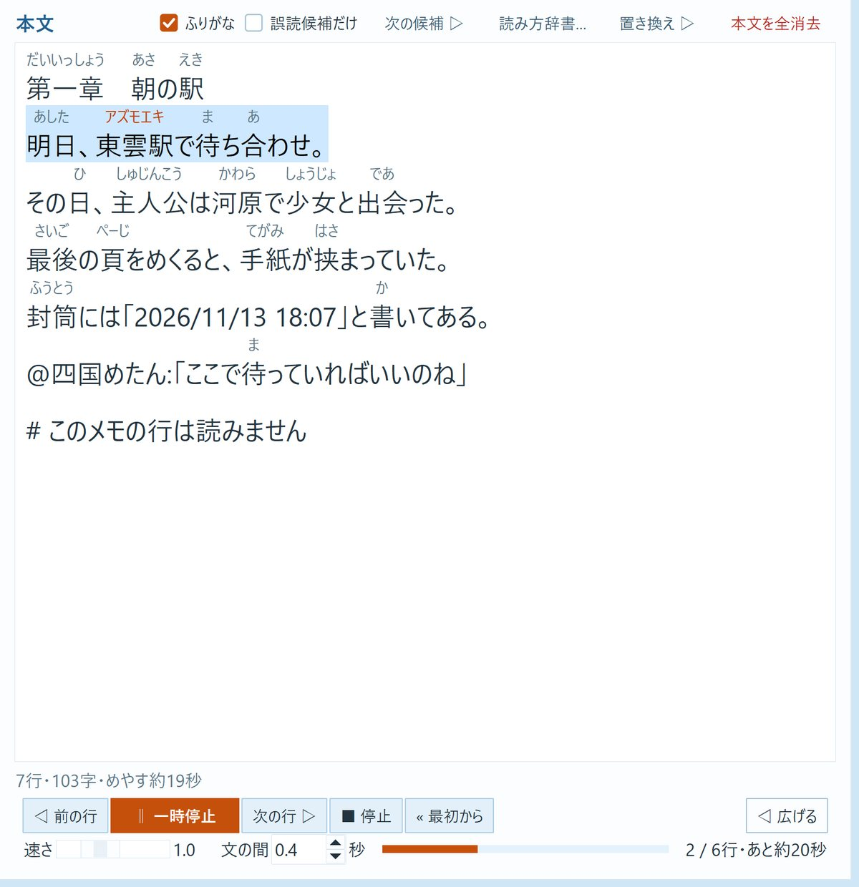
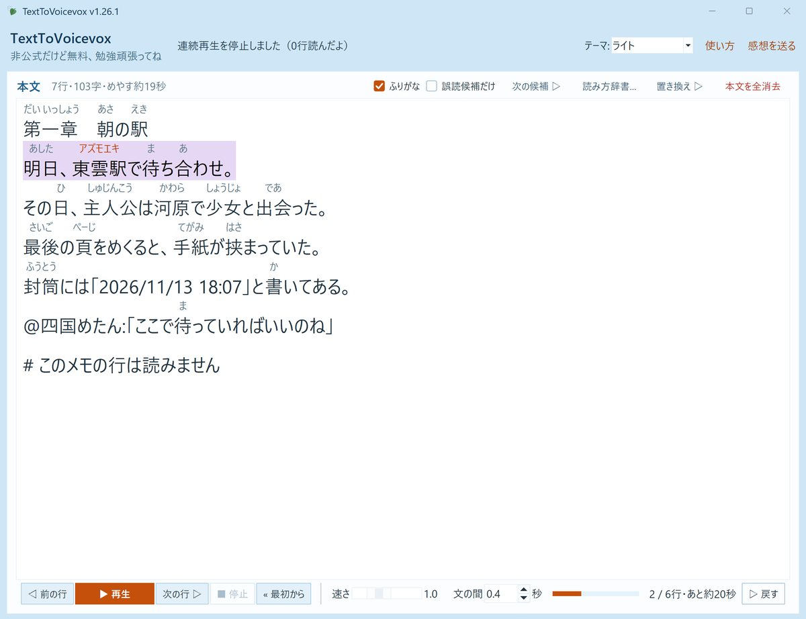
窓が狭いときは、再生バーのボタンが記号だけ（◁ ▷ «）になったり、2行・3行に分かれたりします。ボタンに矢印を合わせると説明が出ます。
10. ③ 保存

- 音声形式 … WAV・M4A・MP3・M4B(本) から選びます（下の表）。
- 字幕(.srt)も保存 … 音声に合わせた字幕ファイルも作ります。
- まとめ方 … 「全部を1つに」（最初の設定）・「1行=1ファイル」・「行数ごと」・「段落ごと」。300個を超えるファイルになるときは、作る前に聞きます。
- 文の間 … 文と文のあいだの無音（秒）。
- 段落・章は長め … 段落の変わり目は文の間の2.5倍、「第一章」などの章の前は5倍あけます（0.4秒なら 1.0秒・2.0秒）。
- ♪ 音声を生成（Ctrl+G）… 保存する場所を選ぶと作り始めます。長い文は並べて作るので速く終わります。途中で Esc で止めて、そこまでの分を保存することもできます。
| 形式 | 向いている使い方 | ほかに要るもの |
|---|---|---|
| WAV | いちばん確実。動画編集にそのまま使える | なし |
| M4A / MP3 | スマホで聞く・容量を小さくしたい | なし（Mac の MP3 だけ ffmpeg が要ります） |
| M4B(本) | 章つきのオーディオブック（「第◯章」で自動で区切る。Apple Books などで聞ける） | なし |
| .srt | 音声に合わせた字幕 | なし |
作り終わると完了の画面が出ます。フォルダを開く で保存先を開き、📋 クレジットをコピー で「VOICEVOX:ずんだもん」のような表記をコピーできます。
VOICEVOX で仕上げる ▷

VOICEVOX のエディタで、抑揚などを細かく直したいときに使います。
- VOICEVOX用に保存(.txt) … VOICEVOX のエディタに読み込めるテキスト。
- 本文をコピー … 本文をクリップボードへ。
- プロジェクト保存(.vvproj) … VOICEVOX のプロジェクトとして保存します（「調整値も入れる」で、速さなどの設定も一緒に）。
声の保管…
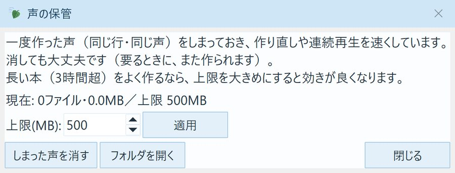
一度作った声（同じ行・同じ声）をしまっておき、作り直しや連続再生を速くしています。消しても大丈夫です（要るときにまた作られます）。長い本を何度も作るなら、上限を大きくすると効き目が上がります。
11. 接続（VOICEVOX）

- ● 接続OK と出ていれば、VOICEVOX とつながっています。
- VOICEVOX起動 … VOICEVOX をエディタの画面ごと開きます。
- 画面なしで起動 … 読み上げの部分だけを、画面を出さずに起動します（軽い）。
- URL … ふつうは
http://127.0.0.1:50021のままで大丈夫です。 - アプリと一緒に VOICEVOX を起動 … アプリを開くと自動で立ち上げます（最初からオン）。
- GPU があれば使う … GPU 版の VOICEVOX なら、声を速く作れます。
- 新しい版が出たら知らせる … 新しい版を確かめるときだけネットを使います。
12. 見た目と文字の大きさ
上の帯の テーマ で、色を選べます。

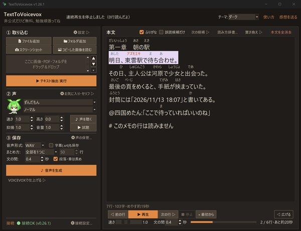
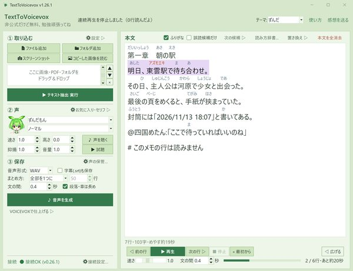
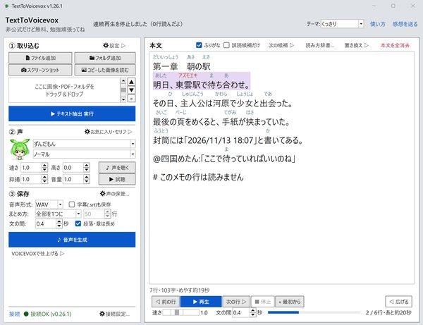
- 本文の文字は、窓を広げると大きくなります（狭い窓では小さくしません）。
- 好みの大きさは Ctrl+＋／－（Ctrl+ホイールでも）、元に戻すのは Ctrl+0。
- 本文の右クリック →「文字の大きさ」で、窓に合わせて大きくするかを切り替えられます。
13. ショートカットキー
Mac は Ctrl の代わりに ⌘ を使います。
| キー | はたらき |
|---|---|
| Ctrl+O | ファイル追加 |
| Ctrl+Enter | テキスト抽出 実行 |
| Ctrl+R | スクリーンショット（画面の文字を読む） |
| Ctrl+Shift+R | 同じ範囲を読む |
| Ctrl+P | 試聴（カーソルのある行） |
| Ctrl+G | 音声を生成 |
| Ctrl+S | VOICEVOX 用に保存（.txt） |
| Ctrl+F | 本文を検索 |
| Space | 再生中：一時停止・再開 |
| Esc | 再生や処理を止める／読書モードを戻す |
| F8／Shift+F8 | 次の／前の 読み間違いの候補へ |
| F11 | 本文を広げる（読書モード）／戻す |
| Ctrl+＋／－／0 | 本文の文字を大きく／小さく／元に |
| Ctrl+Z／Ctrl+Y | 本文の編集を戻す／やり直す |
14. 困ったとき
「VOICEVOX: つながっていません」と出る
VOICEVOX が動いていません。ふつうはアプリを開くと自動で立ち上がります。立ち上がらないときは、左下の VOICEVOX起動 か 画面なしで起動 を押します。毎回そうなるときは、左下の「接続設定…」の アプリと一緒に VOICEVOX を起動 がオンか確かめてください。VOICEVOX をまだ入れていないときは、VOICEVOX を入れる から。
ふりがなが出ない
ふりがなは VOICEVOX につながっているときだけ出ます。つながると自動で出ます。窓が狭いときは、「ふりがな」のチェックが本文の下にあります。
起動.pyw を開いても何も起きない／メモ帳が開く（Windows・zip）
Python が入っていないか、「Add python.exe to PATH」のチェックを忘れています。Python を入れ直すか、1行で入れる方法を使ってください（Python が要りません）。Python があるのにメモ帳が開くときは、右クリック →「プログラムから開く」→「Python」。
「Windows によって PC が保護されました」と出る
「詳細情報」→「実行」で開けます。1行で入れる方法なら、この警告は出ません。
Mac で「"起動.command"は開いていません」と出る
「ゴミ箱に入れる」は押さずに「完了」で閉じ、Mac：zip から入れる の方法（ターミナルで setup_mac.sh）か、1行で入れる方法を使ってください。
読み間違いが多い
色付きのふりがなを押して、読み方辞書に正しい読みを登録します。次の候補 ▷（F8）で候補を順に見られます。数字や日付は「数字・日付・記号の読み方を直す」がオンか確かめてください。
画像の文字がうまく読めない
① の設定の「画像を見やすくしてから読む」「読み取りの間違いを直す」を試してください。Windows で「読み取りを強くする」が出ているときは、押して強い読み取りの部品を入れると、ずっと正しく読めるようになります。読み取りの決まった間違いは「置き換え」に登録しておくと、次から自動で直ります。
アプリが開かない・途中で止まる（原因を調べたい）
デバッグ起動.pyw（Windows の zip では app フォルダの中。Mac は「デバッグ起動.command」）で起動すると、黒い画面にエラーの内容が出ます。記録は「起動エラー.log」（起動に失敗したとき）と「エラー.log」（開いたあとに失敗したとき）に残ります。
部品を入れ直したいときは、Windows は app フォルダの中の「venv」フォルダを消してから起動します（Mac は「setup.command」）。1行で入れた人は、同じ1行をもう一度貼ります。
それでも困ったら
GitHub の Issues か、アプリの上の「感想を送る」、X（@rakuyou211）で教えてください。ちゃんと読みます。
15. 公開するときの決まり
- 作った音声を動画などで公開するときは、VOICEVOX と各キャラクターの利用規約に従い、「VOICEVOX:ずんだもん」のようなクレジットを付けてください。完了の画面の クレジットをコピー で、使った声のぶんをまとめてコピーできます。
- キャラクターごとに決まりが違います（商用の可否など）。使う前に、VOICEVOX 公式サイトの各キャラクターのページを確かめてください。
- 立ち絵（キャラのイラスト）はアプリに入っていません。表示したいときは、app フォルダの
assets/立ち絵/README.mdの案内に従って、自分で置きます（無くても全部の機能が使えます）。 - このアプリ自体は MIT ライセンスです。ソースはすべて GitHub で公開しています。